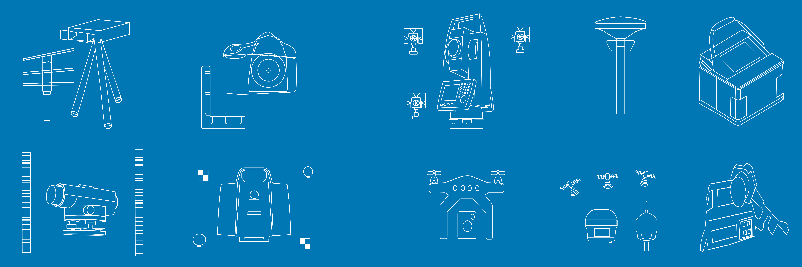

About me
Table of contents Link to heading
- Introduction
- Interests and Activities
- Research portfolio
- Projects
- Academic and industry collaborations
- News
Introduction Link to heading
I am working as a postdoctoral scientist, lecturer and teaching assistant at the ETH Zürich, Institute of Geodesy and Photogrammetry in the group of Geosensors and Engineering Geodesy led by Prof. Dr. Andreas Wieser.
I am passionate about collecting, analyzing, integration and interpretation of geospatial data from different measurement systems. I have extensive experience with geodetic and geophysical instruments, including GNSS, total stations, levels, terrestrial laser scanners, RGB cameras, gravimeters, and magnetometers.

Interests and Activities Link to heading
My broadest professional interests are in geospatial sciences. I am constantly developing and studying novel theoretical findings which can be implemented in practical applications. Topic-wise I am mostly focused on engineering, satellite, physical, and geometric geodesy. These branches have an enormous potential in other academic disciplines and industries. I have been working on interdisciplinary projects with professionals from geophysics, geoinformatics, agriculture, robotics, civil engineering and architecture.
My specific interests are in:
- geodetic reference systems (terrestrial, celestial, height and time);
- geospatial data collection, processing, integration, analysis, and interpretation using GNSS, total station, level, terrestrial laser scanner, laser tracker, camera, radar, gravimeter, and magnetometer;
- high-precision GNSS, geodynamics and navigation;
- geodetic networks;
- 3D reality digitization and modelling;
- geodetic monitoring of infrastructural, industrial and environmental objects;
- gravity and magnetic field modelling at local and regional spatial scales;
- geoid modelling at local and regional spatial scales.
Research portfolio Link to heading
My research contributions are:
- geoid and gravity field models of Europe, Republic of Croatia, France (Auvergne), Colorado (USA), Mediterranean Sea;
- proposal for the modernization of the Croatian height reference system;
- development of geodetic reference system transformation algorithms, workflows and software, including distortion modelling, for several areas worldwide;
- post-seismic crustal deformation analysis, following 2020 Zagreb and Petrinja’s earthquakes (Republic of Croatia);
- 3D models of the cultural heritage sites (e.g. Lausanne Cathedral, Kreuzkirche);
- geomagnetic network establishment and surveying for the territory of the Republic of Croatia;
- geomagnetic network design of Switzerland;
- concept design of the coordinate reference systems for the CERN Future Circular Collider (FCC);
- concept design of the surface and underground geodetic networks for the CERN FCC;
- concept for calibration, control and testing of the geodetic equipment for the CERN FCC;
- GNSS smartphone positioning and navigation in different conditions and areas (several datasets in Slovakia and the USA).
Projects Link to heading
I am involved in projects supported by the European Organization for Nuclear Research (CERN) and the Swiss Federal Office of Topography (Swisstopo).
Academic and industry collaborations Link to heading
My expertise extends beyond scientific research and lecturing. I am providing specific lectures, training, and capacity building to help professionals from diverse backgrounds improve geomatics, geodesy and land surveying knowledge and practical skills.
Interested in collaborating with me? Reach out via e-mail 📧
News Link to heading
- [2024/02/15]: Leading several student projects, including (i) smartphone navigation using ML and factor graph optimization, (ii) total station and laser scanning testing and calibration, and (iii) 3D modelling of Lausanne Cathedral.
- [2024/02/01]: Teaching Engineering Geodesy to ETHZ MSc students during the spring/summer semester.
- [2023/11/17]: Presentation at the 21st Swiss Geoscience Meeting in Mendrisio, Switzerland, titled “Concept development of the Swiss national geomagnetic networks”. presentation
- [2023/09/25]: Teaching Geospatial Reference Systems to ETHZ MSc students during the autumn/winter semester.
- [2023/09/21]: Supervising a student in creating an interactive 3D model of the cultural heritage site from laser scanning and RGB data during the autumn/winter semester.
- [2023/08/30]: Presentation on the CERN Geodetic Advisory Board titled ‘Concept for calibration, control, and tests of the geodetic equipment along with the description of the required facilities for FCC, Overview & Discussion’.
- [2023/05-2023/09]: Working on the project “Concept for calibration, control and tests of the geodetic equipment along with the description of the required facilities for FCC”.
- [2022/06/01]: Presentation titled “FCC coordinate reference and networks” on the CERN Future Circular Collider(FCC) week in Paris, France.